TRAIN诊断与完整Val-Seen导航分开，无Test与GT推理。红星离线GT，青线公开Polygon。
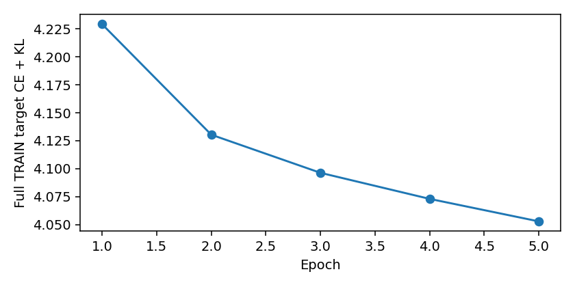
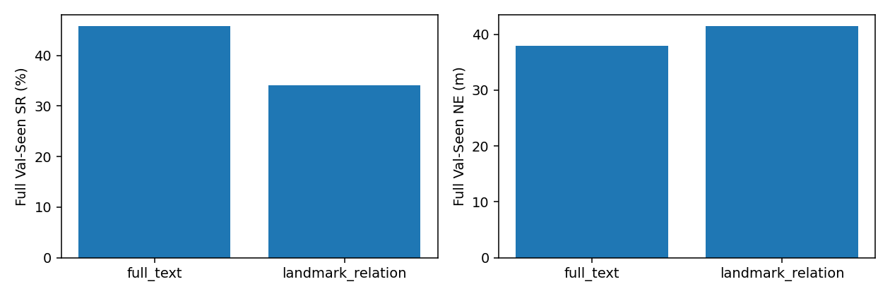
The brick building with grey roof on the Willmore Road, has one white car at the front, white shed in the back yard.
on Willmore Road
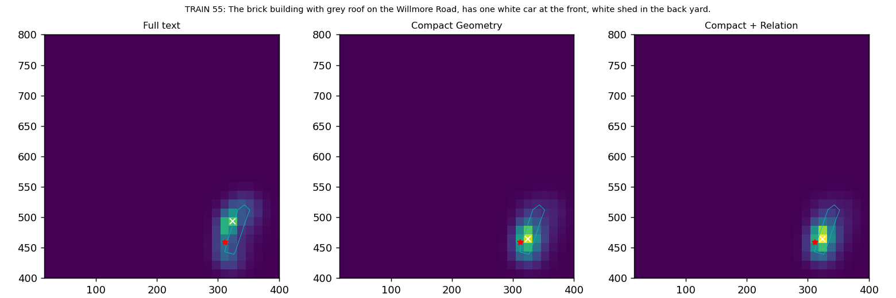
A multicolored blue and white long rectangular building with a light gray roof, that is facing the corner of Celine Grove and willmore Road
Celine Grove; willmore Road
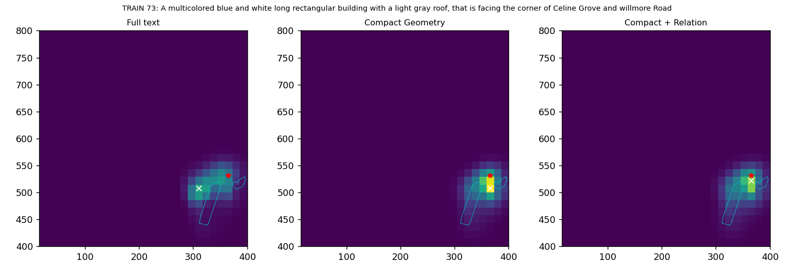
It is the second house nearest to the long white roofed house along celine Grove road. It is facing Willmore road in front of it. It has a tree on it's backyard. There is a black car parked in front of it.
along celine Grove; Willmore road
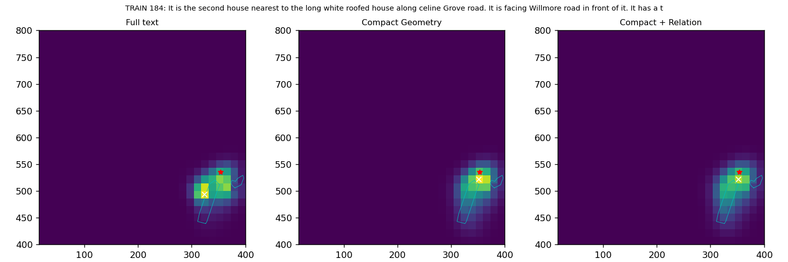
The brick building at the end of Leslie Road that has a gray roof and a gray garage door.
Leslie Road
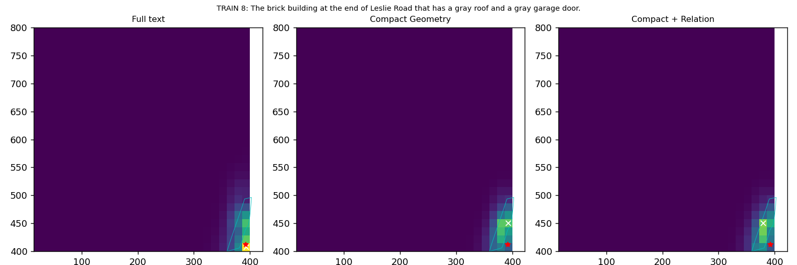
The dark gray building on Leslie Road across from the row of gray houses.
on Leslie Road
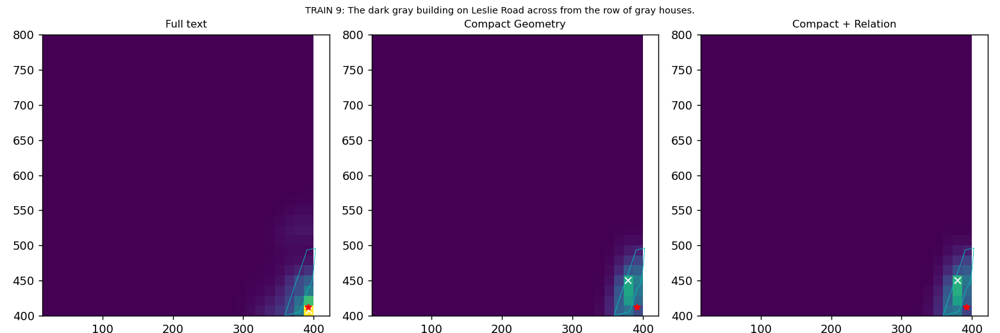
Two buildings, a one floor Brown building with a gray roof next to a taller brown and white building with a gray roof and a skylight on the corner of the map off Leslie Road
Leslie Road
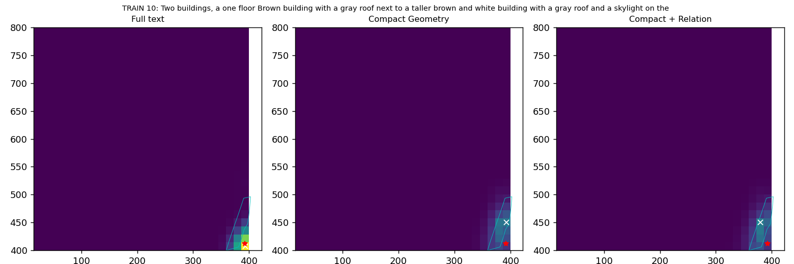
two brown buildings of varying heights on the corner of the map next to a lot with three white and red painted dividers off Leslie Road
Leslie Road
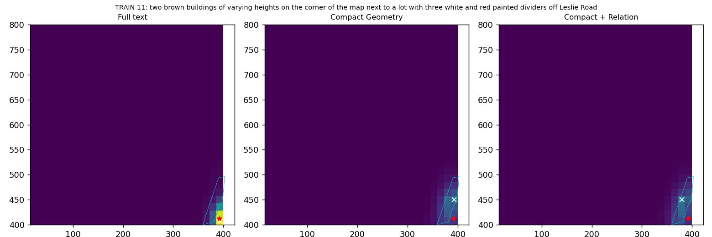
If you take a right onto Leslie Road coming from Celine Grove this is the first building off to your left.
Leslie Road; Celine Grove
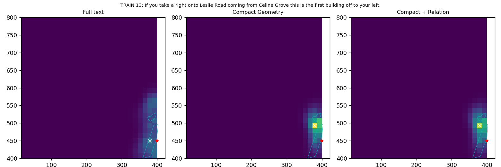
The large building on Wellington Rd / Grosvenor Rd that has a parking lot beside it and a white box in the backyard in front of the Full Circle Events & Exhibition Ltd building.
on Wellington Rd / Grosvenor Rd
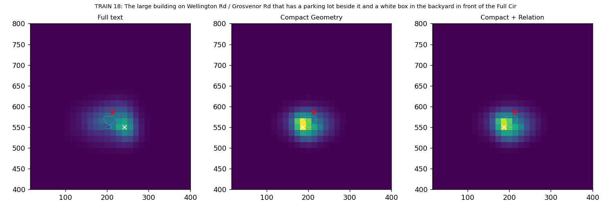
This is a building located on Wellington Rd/ Grosvenor Rd. Near it is a parking space with about a dozen cars in it.
on Wellington Rd/ Grosvenor Rd
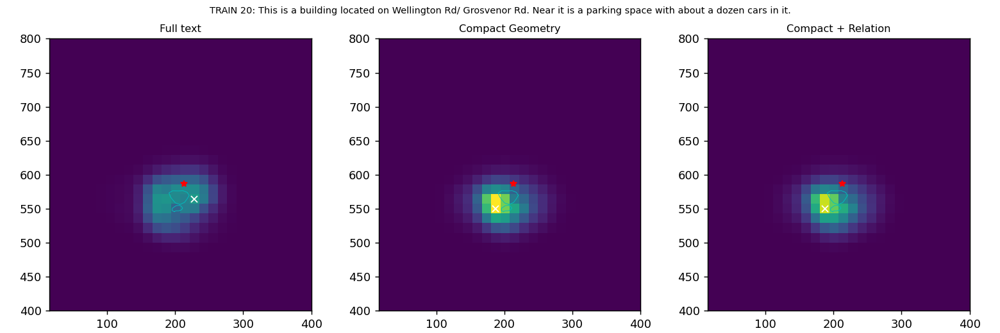
The whole section of buildings beside the and including the bright orange buildings on Wellington street between Leslie and Willmore.
[UNK]
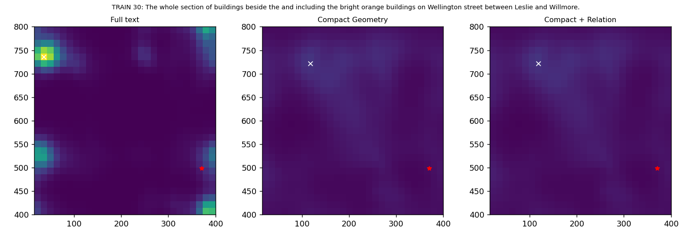
Two-story brown house with a gray roof that is second from the edge of the map of Wilmore Road, that has one white car and one black car in front of it and a green pool in the backyard
[UNK]
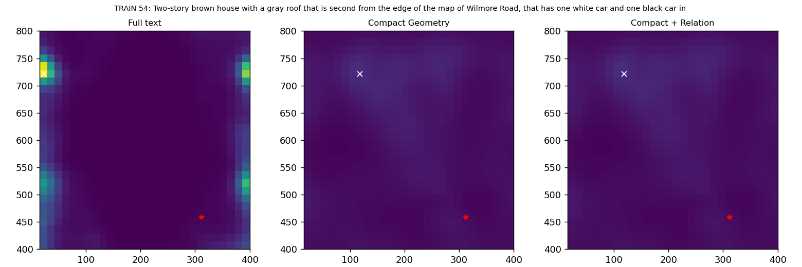
This building is the entire row of houses on Leslie Road. Although it's a terrace it should probably be classed as separate building/s
on Leslie Road
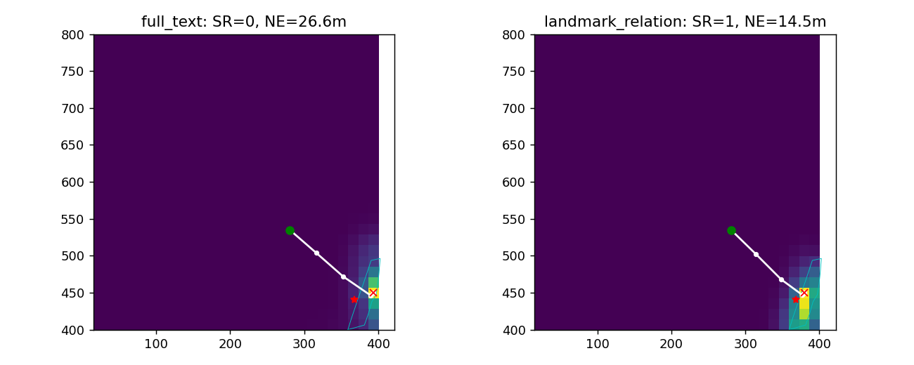
The black car parked next in front of the long building at the end of Celine Grove. It has an empty spot next to it on one side and a median with bushes on the other.
Celine Grove
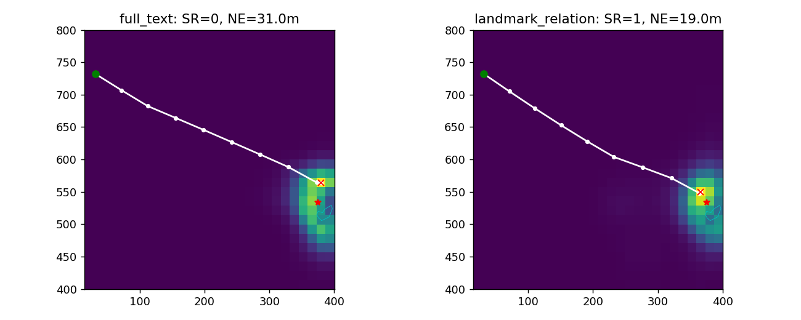
One black car, facing two white vehicles and one gray vehicle across from it Celine Grove near the edge of the map
Celine Grove
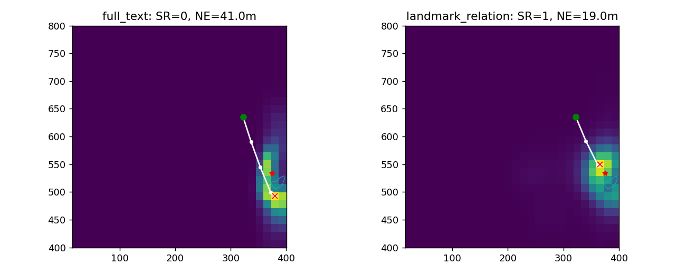
The long row of gray houses with cars parked in front of them along Leslie Road.
along Leslie Road
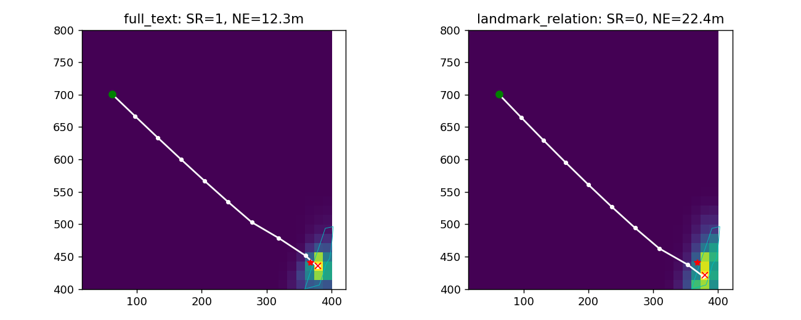
Two cars red-lined, a partially visible red car and a partially visible black car next to each other, in between two black cars and a white car with a black top, in the parking lot that's on the side of the St Teresa of the Child Jesus Catholic church building off Wellington Road
St Teresa of the Child Jesus Catholic church; Wellington Road
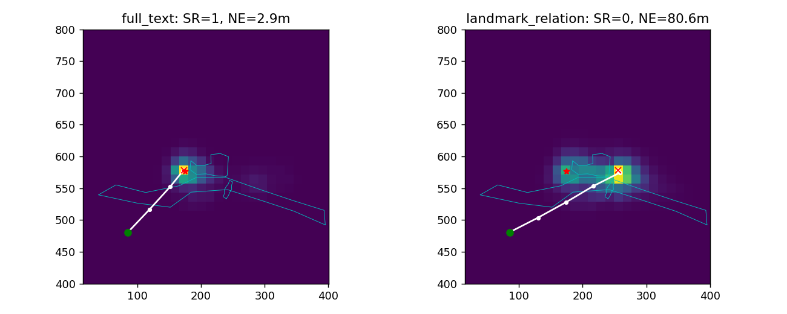
White car in a parking area in front of three brown houses along Wellington road. It is in between the two white cars facing the middle house.
along Wellington road
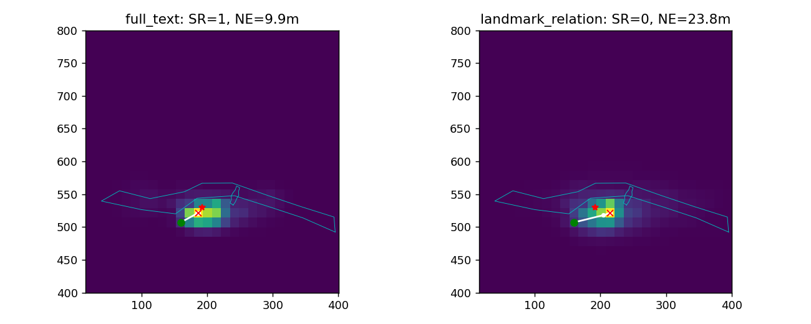
The blue car that is 1st from the left in the top row of cars in the brown parking lot off of Wellington Road, in front of a gray and white building.
Wellington Road
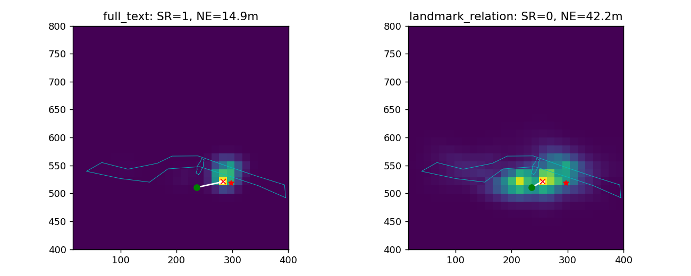
The dark blue car that is 1st from the left in the top row of cars in the parking lot off of Wellington Road.
Wellington Road
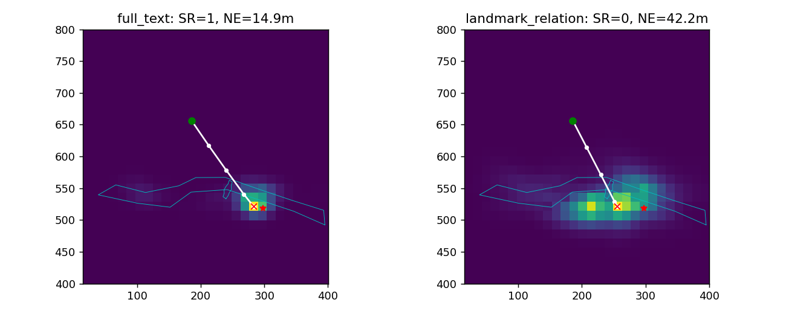